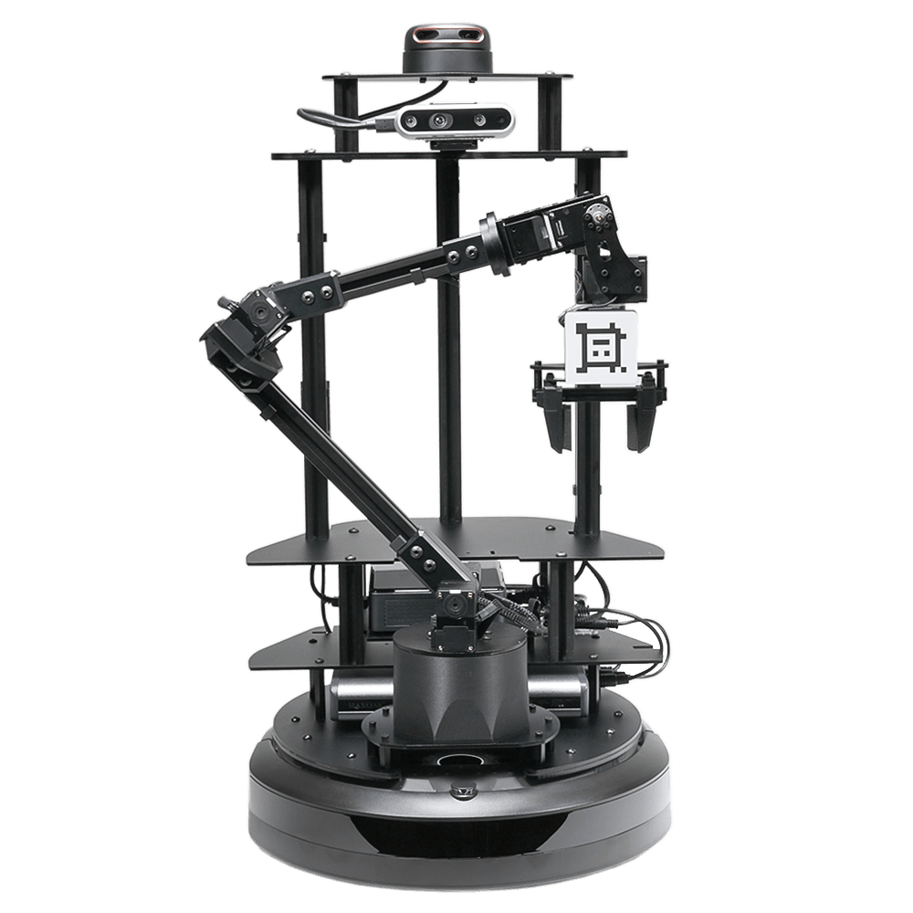
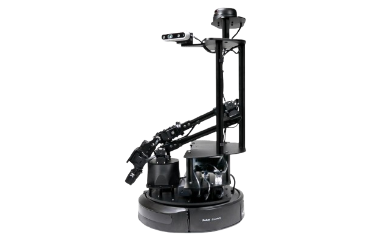

Interbotix LoCoBot¶
 
1. Hardware¶
1-1. Power¶
機上電力全由左下圖中的大行充供給，沒電時就充行充。
NUC 位置如右下圖所示，在大行充的上方隔板，接上電源後，須手動按按鈕開機。


其他硬體資訊
想了解機上的硬體設備可以參考官網：
- LoCoBot 馬達參數、尺寸：LoCoBot WidowX-200
- LoCoBot 硬體表、感測器：LoCoBot Hardware
- 官方 ROS2 Package：Interbotix/interbotix_ros_rovers
2. Software¶
由於 Stretch3 使用者多，每人開發習慣不同，也使用不同 repo。
以下開啟方式為 @pomelo925 維護，如果須特定功能請找相關的開發者哦。
Repository: https://github.com/hrc-pme/interbotix-locobot.git
開啟步驟：
- 將機上 NUC 開機，並 SSH 遠端登入。
- 找空的資料夾路徑(如
/home/myname/)，下載此 repo。
-
在 repo 根目錄執行
source run.sh，會自動開啟以下功能：- 啟動底盤，等待速度指令(ROS1/ROS2 皆可)。
- 啟動 Intel® RealSense™ 深度攝影機。
- ROS1 Bridge，用途是將 ROS1 相機與底盤訊息，轉接到 ROS2 Topic 上。
其他功能
由於 LoCoBot 歷史悠久，過去皆使用 ROS1 Package。
由於牽涉硬軟體環境，@pomelo925 暫時直接用 ROS1 Bridge 以跟上時代。
心有餘力者歡迎將 package 移植到 ROS2，並整合機上其他相機與手臂控制節點。